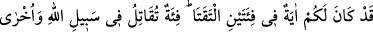
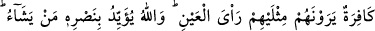
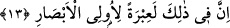

Beraberce Peygamberimize karşı savaşmak için anlaşma yaptılar ve bu âyet-i celîle
nâzil oldu.
“Siz pek yakında yenileceksiniz.” Yani yakında dünya hayatında mağlûb
olacağınızdan şüpheniz bulunmasın. Cenâb-ı Hakk’ın bu sözünün doğruluğu Benû
Kurayza Yahûdîlerinin boyunlarının vurulması, Benû Nadir Yahûdîlerinin Medîne’den
kovulmaları ve Hayber’in fethi gibi hadiselerde ortaya çıkmıştır. Bu hususların
gerçekleşeceği aynı zamanda Peygamberimiz tarafından da bildirilmiştir. Bu nedenle
Peygamberimizin ileriye dönük verdiği bu haberler, onun risâletinin alâmetleri
cümlesinden kabul edilmiştir.
Dünyadaki bu mağlûbiyetinizden sonra da âhirette “cehenneme sürüleceksiniz.”
Âyetin lâfzındaki haşr kelimesi sevketmek ve toplamak mânasınadır ki âhirette hepsi bir
araya getirilerek cehenneme sevkolunacaklar ve o kötü ikâmet yerinde ebedî olarak
kalacaklardır.
13. (Bedir’de) karşı karşıya gelen şu iki gurubun hâlinde sizin için büyük bir ibret
vardır. Biri Allah yolunda çarpışan bir gurup, diğeri ise bunları apaçık kendilerinin
iki misli gören kâfir bir gurup. Allah dilediğini yardımı ile destekler. Elbette bunda
basîret sahipleri için büyük bir ibret vardır.
Âyet-i celîle mahzûf (zikredilmemiş) bir kasemin (yeminin) cevabı ile başlamaktadır
ki bir önceki âyette muhâtap alınan Yahûdîlere yöneltilen bu hitap şöyle takdir
edilebilir: “Ey sayılarının çokluğuna ve ellerindeki imkanların bolluğuna aldanan
Yahûdîler! Şimdi şu aşağıda anlatacağım hâdisede, sizin yenileceğinize dâir verdiğim
haberin doğruluğuna âit büyük bir delil bulacaksınız. Bu delil, iki topluluğun
birbirleriyle savaşı hakkındadır ki bunlardan mağlûb olan, kendi çokluğuna bakarak
başı dönmüş, kendini büyük görerek beğenmiş ama neticede hezîmete uğramıştır. Siz de
şimdi onların uğradığı âkıbete uğrayacaksınız.”
Bu iki topluluk Bedir’de karşı karşıya geldiler. Bunlardan biri Allah yolunda
savaşıyordu ve sayıca az, gözle görünür bir kudretleri olmayan kimselerdi. Onlar,
Muhammed (a.s.)’ın ashâbı idiler. Karşı tarafta ise, Allah ve Rasûlü’ne küfreden bir
topluluk bulunmaktaydı.
Kâfirler, (muharebe esnasında) mü’min topluluğu, kendilerinin iki misli olarak
görüyorlardı. Müşrikler içlerinde Ebû Süfyân ve Ebû Cehil’in de bulunduğu 950
savaşçı idiler. Başlarında Utbe bin Rebîa bin Abdişems bulunuyordu. 100 kadar atları,